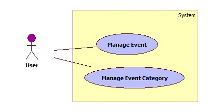
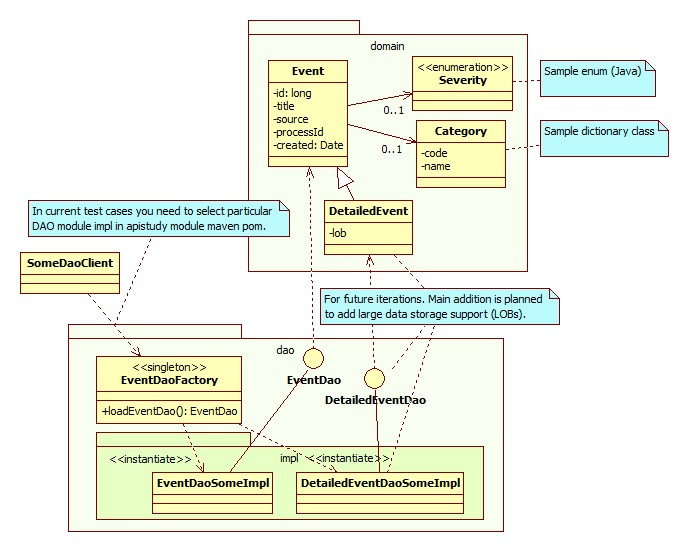
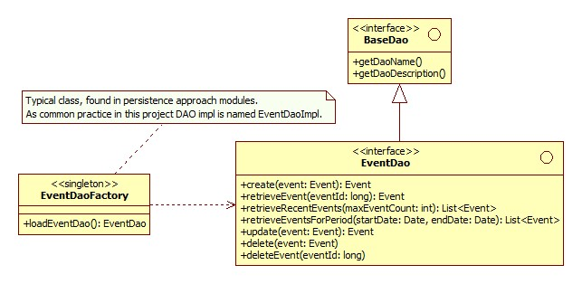
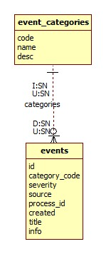
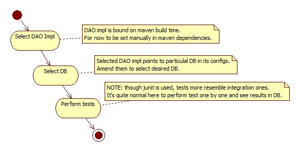

Event tracker (ETR)
| Project: |
Event tracker |
| Inception: |
2014-01-13 |
| Goal: |
Based on sample of event domain model show how different combinations of industry popular
(Java) frameworks(frmk-s)/approaches can be used to handle events. For persistence entity CRUD operations in different DBs to be explored. |
Contents
There are tons of approaches to work with popular frmks e,g, for databases persistence. It's easy to get lost among them even if you're seasoned developer.
Once you start this endeavour, you realise that documentation varies from frmk to frmk in details and quality,
sample code and configs are not for combination you assess, particular versions of frmk-s don't
live together well. Forums - though useful, sometimes more confuse than help. It's especially common when the newest frmk versions are emerged
(notice this set of projects generally grabs the latest stable version of whichever frmk).
Another way to look at it: you joined new team. They use some combination of frmk-s which you didn't try.
Codebase is large and not easy to grasp at once. Performance optimizations and bug fixes/workarounds can greatly reduce code readability.
Yes, there are books, forums, guru fellows who can help out. But forums can mislead(for instance discuss elder frmk versions), gurus are busy
, and you want to see sample actionable code and run it now, learn in a matter of minutes how
typical combination of those frmk-s works, how much config/code it "consumes". This project tries to
embrace it via providing code snippets and configs which proven to work for particular frmk-s(generally the newest on time of addition).
Use cases are extremely simple from high level:

For 'Manage Event' main scenarios are: 'create','update','delete','retrieve'(a few methods e.g. per category or severity, sorted by date, paginated).
Actors/users can be humans or machines. As a sample: event producer can generate events and send them to topic/queue.
Event consumers can be users who monitor events via dashboards. WebSocket clients can setup tcp
connection from browser to topic/queue consumers and listen to new events in real time.
Consumers can be also CEP(Complex Event Processing) systems. They can detect predetermined patterns
(e.g. 10 ERROR events from one source during 1 minute) and generate alerts(events themselves). Some sort of AI/machine learning can be applied too if time allows.
Another area is BPM (Business Process Management). They can be launched by events (or particular steps triggered) or produce events.
So only imagination(and author lifespan) limits cases where events can be explored.
Current selection snapshot:
(lang: Java SE v7) (frmk: JDBC v4+ | JPA v2+ | Spring v4+ | Hibernate v4+ | Mybatis v3+)
(DB: SQL: (derby v10+ | mysql v5+| pgsql v9+) NoSQL: (Cassandra 2+ | Solr 4.7+)) (config: XML | Annotations).
TODO: Consider Spring Data for persistence.
You can ask why for DBs there are no e.g. Oracle, IBM DB2. They are solid, matured DBs. For now they are ignored
for the sake of DB setup simplicity(e.g. try to find oracle for win7 64x machine which doesn't eat a few gigs of your HDD).
Only immensely popular, easily available and open source DBs are selected.
TODO: Well, it would be fair to add at least one of big guys DB (Oracle?) and stored procedures via JDBC can be explored.
Side notes:
- It's incredible hard to embrace all combinations, so only some "mainstream" will be selected.
- "Container less" variations are considered only. JPA is the closest to JavaEE though.
It's selected to avoid any clutter of additional configuring and dependencies from any EE container.
Despite of it those testing DAOs will likely be used in EE containers for testing web-middleware-backend path.
- Some of frmk-s can be combined in "chains" e.g. (JPA + Spring + Hibernate). Folders and odcs will help to determine which combinatiopn is supported.
- No embedded DBs/modes are chosen. They are perceived as too far from PROD ready apps. Apache Derby (or JavaDB as modern name) has embedded mode.
You can test it if you wish.
Current iteration (Mar 2014) already embraced planned SQL and NoSQL DBs persistence. Next iterations can embrace e.g.:
- (JavaEE: version: (v6 | v7) ; profile: (web | full))
- (lang: (Java SE 7 | JVM: (groovy v2+ | scala)) | python | perl | MS.Net: (c#))
- (DB: SQL: (Oracle)) (NoSQL: (MongoDB | Neo4j)) (idea is to embrace major NoSQL DB types: key/value or columnar, document, graph)
- 2nd level caching (notice ehcache is already used in a few persistence combinations)
- How easy to code/config a solution.
- Transaction(TX) support for ACID DBs(mostly SQL, but e.g. graph DB neo4j supports ACID too).
- XA distributed TX support (2 phase commits; JavaEE container is required).
- Date handling support (on very basic level; as a sample of not totally primitive data type).
- PK support. Client and DB side PK generation. Interesting case is complex keys support. Many legacy databases have composite keys.
- How easily Object/Relational mismatch is handled(those inheritance hierarchies).
- "Reconfigurability" (especially for env specific params).
- Pagination support (can be critical for large storage).
- Lazy loading (again critical for big data).
- Large data types support(for now long string is enough; e.g. via Clob or longvarchsr).
- Performance: latency, throughput.
- Memory consumption.
- Multi-threading support(how frmk-s sustain concurrent use; mutasker external lib can be used for load tests).
- Security (secured passwords, connections etc. Can be too large topic for this small project).
- Caching(consider ehcache as a sample).
- i18n(e.g. using UTF-8 charset for data).
- Create event
- Update event fields
- Retrieve event by ID
- Retrieve limited amount of recent events(useful for feeds)
- Retrieve events for period (check cases where some or all date params are null)
- Delete event by ID
Base dir is projects/java_se7_sql/approaches.
| Approach |
Module path |
| Cassandra/CQL |
cassandra/cql |
| Hibernate/JPA/Annotations |
hibernate/jpa/annot |
| Hibernate/Spring/Annotations |
hibernate/spring/annot |
| Hibernate/Spring/JPA/Annotations |
hibernate/spring/jpa/annot |
| Hibernate/Spring/XML |
hibernate/spring/xml |
| Hibernate/XML |
hibernate/xml |
| JDBC |
jdbc |
| MyBatis/Annotations |
mybatis/annot |
| MyBatis/Spring/Annotations |
mybatis/spring/annot |
| MyBatis/XML |
mybatis/xml |
| Solr/Direct |
solr/direct |
| Spring/Templates |
spring/templates |
It's expected for codebase to show some of them, but not all. Each module should describe what feature set is implemented.
Main idea of design is to create easily 'buildable' mini projects frmk which allows to quickly add and test frmk-s combination.
To simplify at least one aspect of system entities are planned to be used exactly the same and considered as "frozen".
Domain and DAO classes:

DAO interfaces - more details:

Main POJO classes to play with are:
Event(id: long, category: Event.Category, severityLevel: enum(INFO/WARN/ERROR/FATAL)
, source: string, processId: string, title: short_string, created: date_time).
Supplement entity is dict of event categories:
Event.Category(code: string, name: string).
These classes are suitable for lists and eager relationships mapping.
For more detailed info subclasses are to be used(likely in the next iteration):
DetailedEvent extends Event (info: long_string).
DetailedEvent.Category extends Event.Category(desc: long_string).
They are expected to be used only for individual entity editing.
Sample:
Event(id: 123439887656, categoryCode: "START", severityLevel: "INFO", source: "server1"
, processId: "PRC2387613", title: "System 123 get started", created: "2014-01-13H03:31:12.349Z").
Event.Category(code: "START", name: "Start")
Event.Category(code: "INTERACT", name: "Interaction")
Event.Category(code: "STOP", name: "Stop")
DetailedEvent(id: 123439887656, categoryCode: "START", severityLevel: "INFO", processId: "PRC2387613"
, title: "System 123 get started" , created: "2014-01-13H03:31:12.349", info: "E.g. XML with details of start.").
DetailedEvent.Category(code: "START", name: "Start", desc: "Activity started.")
DetailedEvent.Category(code: "INTERACT", name: "Interaction", desc: "Interaction performed.")
DetailedEvent.Category(code: "STOP", name: "Stop", desc: "Activity started", desc: "Activity stopped.")
Practicality of this entity set in everyday life is doubtful, but at least
some interesting use cases can be imagined in future iterations.
For instance JMS queue can receive log message from some remote system and transactionally store in DB(XA 2 phase commit).
It's easy to imagine millions of records for events to check performance(reading/writing), as another case.
Another "typical" case is workflow. A field ${processId} can be used to group events for some business process.
A field ${source} can be process name. CEP rules can be implemented somewhere. Sample rule: suspended case after series of 'INTERACT' events.
Warning about this sleeping process can be sent (e.g. as email, sms, or new event with severityLevel = 'WARN').
Core DAO is EventDao. Event categories can have own DAO if time allows.
To maximize simplicity for ORM inheritance hierarchy '1 table per class hierarchy' approach is selected.
Tables can look like:

Table event_categories(code varchar(16) {PK}, name varchar(100) {UNQ}, description longvarchar).
Table events(id long {PK}, category_code varchar(16) {FK}, severity varchar(5)
, source varchar(100), process_id varchar(100), title varchar(100), created timestamp, details longvarchar).
Project is organised as directory structure with hierarchy of selected frmk names and approaches.
For instance if we need to checkout how 'Java SE 7' + Spring JDBC templates, path to impl module could be:
/java_se7_sql/approaches/spring. Root dirs e.g. 'java_se7_sql' can be considered as "autonomous" group of modules. They can contain
subtrees of modules with some reusable members (e.g. commons, api).
NOTE: If tree looks too "deep", flattening can be applied. Sample - 'java_se7_sql' (it could be e.g. 'lang/java/se/7/sql').
For now main build tool is maven v3+, but gradle is in considerations too.
Typical command is 'mvn -e clean test'.
OS specific scripts will be provided for win7+(and maybe cygwin) and linux(sh) for now.
They should be consider as hints/tips and main artefacts are DDL/DML files.
For DBs basic setup instructions can be found in corresponding configs subdirs.
DDLs and DMLs with initial data used in tests were added as e.g. SQL scripts.
For example, if you need to create ETR tables in Postgresql, check configs/sql_db_samples/pgsql/sql/create_tables.sql.

Java persistence has handful major paths and a lot of impl frmk-s. The lowest level is JDBC. It has 4 driver types.
This project will embrace type 4 (pure Java driver). One step above of abstraction is JPA spec. It gradually replaced JEE entity beans.
You'll see a few impls here. ORM allows to move abstraction up and developers can (theoretically) focus in Java dev rather than diving in SQL.
In reality many business DB structures, especially legacy ones, have so "ORM incompatible" features (denormalization, absence of OO inheritance support),
enterprise dev-s still need to dive on SQL (and/or stored procedures) level.
Because there are tons of docs about persistence around, only short descriptions of approaches are provided below.
Key config artefacts, classes, sample code snippets for one particular DAO operations (e.g. retrieve event) are provided.
Code, context specific readme files and configs are considered here as detailed actionable docs.
JDBC connection config note: pretty often you can find db.properties file in resources folder.
It has sample connection config info e.g. for derby:
# JDBC connection:
jdbc.driver=org.apache.derby.jdbc.ClientDriver
jdbc.url=jdbc:derby://localhost:1527/eventium
jdbc.username=etracker
jdbc.password=some_password
For other DBs you only need to copy/paste their specific values from similar db* files.
OK, let's get started.
Class EventDaoImpl uses DbConnectionFactoryl.It, in turn, goes fo DB settings to db.properties via DbConnectionSettingsHolder.
For 1 time category loading EventCategoryCache is used. For now no 2nd level caching is used to make things simple.
Code fragment for retrieveEvent:
String queryString = "select id, title, category_code, severity, source, process_id, created from events where id = ?";
try (PreparedStatement statement = connection.prepareStatement(queryString,
ResultSet.TYPE_SCROLL_INSENSITIVE, ResultSet.CONCUR_READ_ONLY)) {
statement.setLong(1, eventId);
ResultSet resultSet = statement.executeQuery();
boolean firstExist = resultSet.first();
Notice Java SE7 style for resource allocation.
This section describes what this project is NOT about and what to be aware of while perusing its artefacts.
- Code and configs are for quick start in particular combination of frmk-s only.
Production ready code definitely requires more polishing, e.g. "what if"s handling, NOP situation catching etc.
- There is no goal to show all advanced features of used frmk-s. More specific projects to be created if time allows.
- In production systems reusability is one of key non-functional requirements.
This project follows this practice only partially as "side feature" because main goal is
to just show working basic combination, without forcing learner to jump through all hoops/levels of dependencies.
Code is expected to be repeated, with reasonable level of sanity. Consider subprojects as relatively independent modules.
- Pragmatism(and a sort of laziness) is strong force to have good enough amount of frmk combinations.
Missed combinations are hopefully can be figured out from provided ones.
- This project assumes you have basic knowledge in back-end development area, familiar at least with Java, SQL.
- At least from beginning only the most popular modern and stable frmk-s versions to be selected.
Elder versions maybe get addressed when project itself comes to age. Funny part is: these now modern versions will be old soon :).
- Project is in status "pet PoC, to play around", can be removed at any time without warning.
| Abbrev |
Definition |
| frmk |
framework |
| config |
configuration |
| CRUD |
Create/Read/Update/Delete |
| NOP |
Null Pointer (exception) |
| OSS |
Open Source Software |
| dict |
dictionary |
| DAO |
Data Access Object |
| ORM |
Object Relational Mapping |
| DB |
database |
| PROD |
Production |
| DEV |
Development |
| TX |
Transaction |
| ACID |
Atomic Consistent Isolated Durable (about TX) |
| PK |
Primary Key |
| FK |
Foreign Key |
| env |
environment |
| param |
parameter |
| dir |
directory |
| desc |
description |
| CEP |
Complex Event Processing |